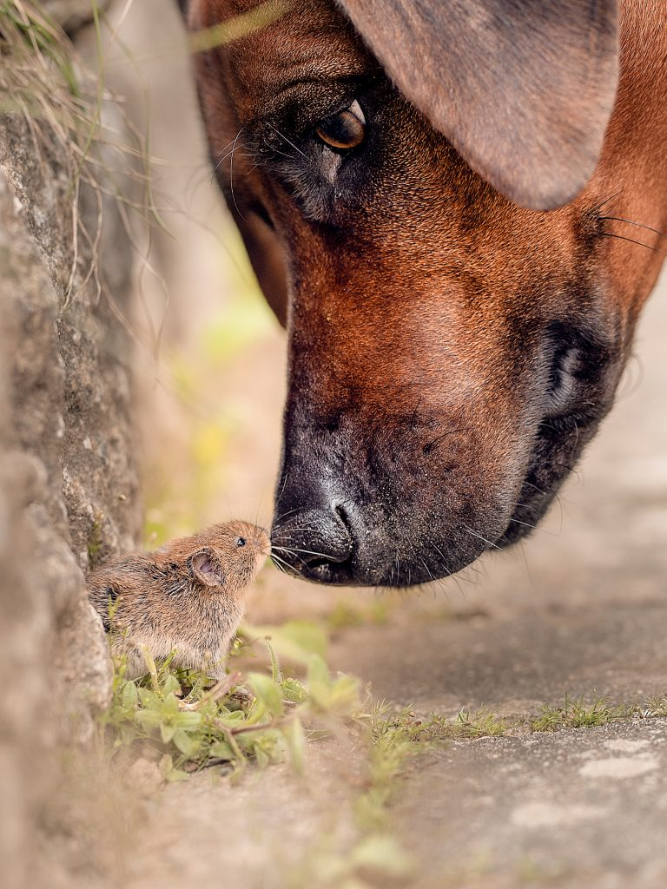
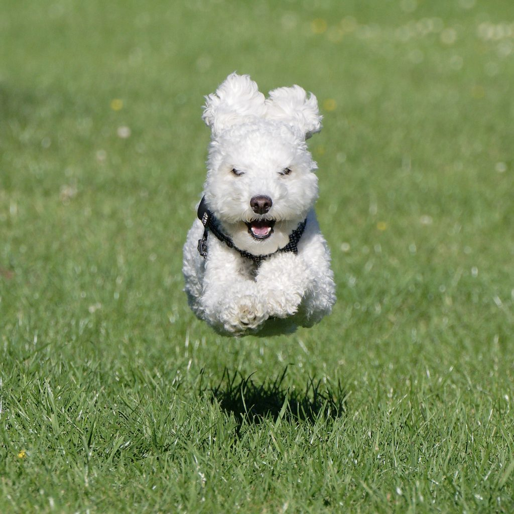
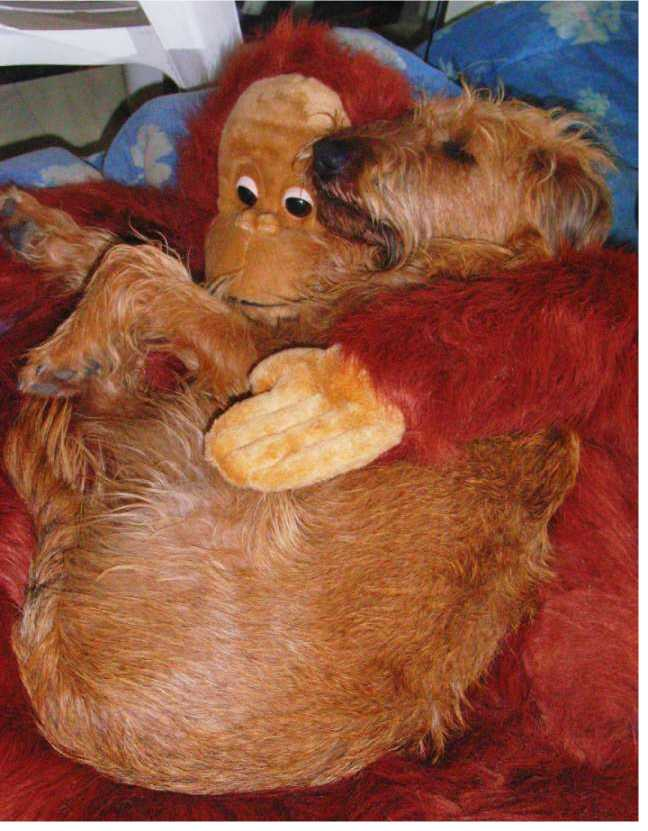

Es un compromiso con aquellos que no pueden defenderse por sí mismos. Sabemos que, aunque cada huella que dejamos en el camino pueda parecer pequeña, juntas pueden construir un sendero de esperanza y transformación para miles de animales que merecen una segunda oportunidad.
Más InformaciónVision Ser una organización líder en la protección animal, creando un mundo donde cada huella, por pequeña que sea, sea un paso hacia la justicia y el respeto hacia todos los seres vivos. Queremos transformar la vida de los animales y de las personas, creando una sociedad que valore y proteja a los animales como miembros fundamentales de nuestro entorno.
Mision Salvar las huellas de los animales más vulnerables, rescatándolos, proporcionándoles un hogar temporal seguro, y ayudándolos a encontrar familias responsables que les ofrezcan una vida llena de amor. Además, trabajamos en la sensibilización de la comunidad para erradicar el abandono, el maltrato y promover una convivencia armoniosa con los animales.
Fundación Salvando Huellas nació del compromiso y la pasión por los animales que, día a día, luchan por sobrevivir en las calles, por un futuro mejor, o por encontrar un hogar lleno de amor. Nuestra fundación fue creada por un grupo de personas con una visión clara: salvar las huellas de aquellos que no tienen voz y darles una oportunidad de vivir una vida digna y llena de afecto. La idea surgió cuando un pequeño grupo de voluntarios, sensibilizados por la creciente población de animales abandonados y maltratados en las calles, decidió que ya era hora de actuar. Sabían que cada animal, por pequeño que fuera su rescate, dejaba una huella en el camino hacia un mundo mejor. Así, "Salvando Huellas" se fundó como un refugio para aquellos animales que más lo necesitan: los más vulnerables, los olvidados, los que no tienen a nadie que luche por ellos.
Objetivo Ofrecer un espacio seguro y adecuado para animales abandonados o maltratados, y promover la adopción responsable.
Servicios: Refugio temporal para perros y gatos sin hogar. Campañas de adopción responsable y concientización. Charlas educativas sobre la tenencia responsable de mascotas.
Actividades: Jornadas de adopción en parques o espacios públicos.Programas de esterilización para controlar la población animal. Capacitación para cuidadores de refugios locales.
Objetivo Brindar atención médica a animales de la calle y de familias de bajos recursos.
Servicios: Consultas veterinarias gratuitas o a precios bajos. Vacunación y desparacitación masiva de animales comunitarios. Campañas de prevención y cuidado de enfermedades comunes en animales (parvovirus, leptospirosis, etc.).
Actividades: Operativos de salud animal en zonas vulnerables. Distribución de alimentos y medicinas a refugios y animales callejeros. Talleres educativos sobre cómo cuidar la salud de las mascotas.
Objetivo Fomentar el respeto y cuidado hacia los animales desde una edad temprana, Crear una comunidad activa de voluntarios que ayuden en diversas actividades relacionadas con el bienestar animal,Promover la legislación y políticas públicas que protejan los derechos de los animales.
Servicios: Programas educativos en escuelas sobre bienestar animal y derechos de los animales. Crear peticiones para mejorar las leyes de bienestar animal. Formación de voluntarios en temas de rescate, primeros auxilios para animales y socialización. Creación de una red de voluntarios que pueda proporcionar hogares temporales a los animales hasta su adopción.
Actividades: Capacitación a voluntarios sobre cómo promover la adopción y cuidados de los animales. Colaboración con otras organizaciones para presionar por cambios legislativos Talleres interactivos con niños, donde puedan aprender a cuidar a los animales de manera divertida
Hace un año, adoptamos a Max, un perro que encontró su hogar con nosotros después de ser rescatado de la calle. Al principio, estaba muy asustado, pero con paciencia y amor, Max se ha convertido en el miembro más querido de nuestra familia. Hoy es nuestro compañero fiel, y no podemos imaginar nuestra vida sin él.
Familia Torres"Ser voluntario en Salvando Huellas ha sido una de las experiencias más gratificantes de mi vida. He visto de primera mano cómo un acto de amor puede transformar la vida de un animal. No solo ayudamos a los perros y gatos, sino que también cambiamos nuestras propias perspectivas sobre lo que significa ser responsable con las mascotas."
Maria